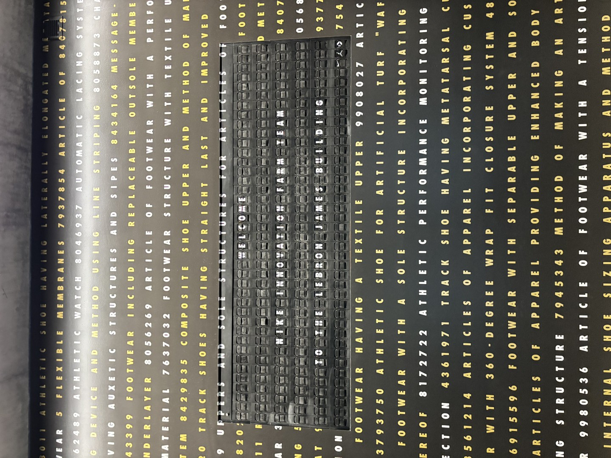
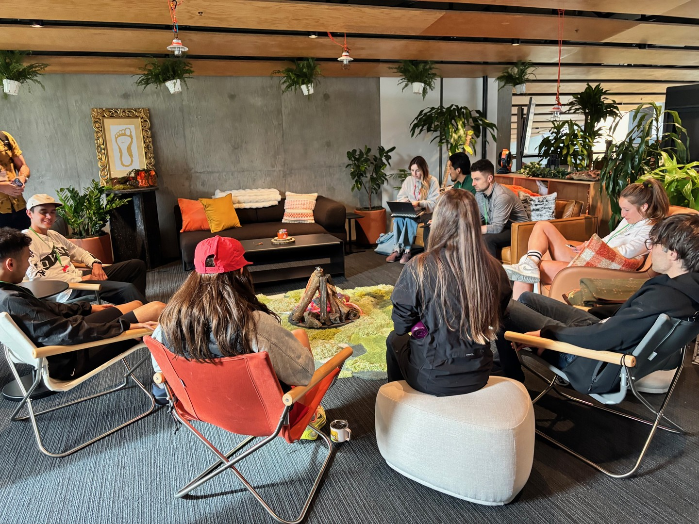
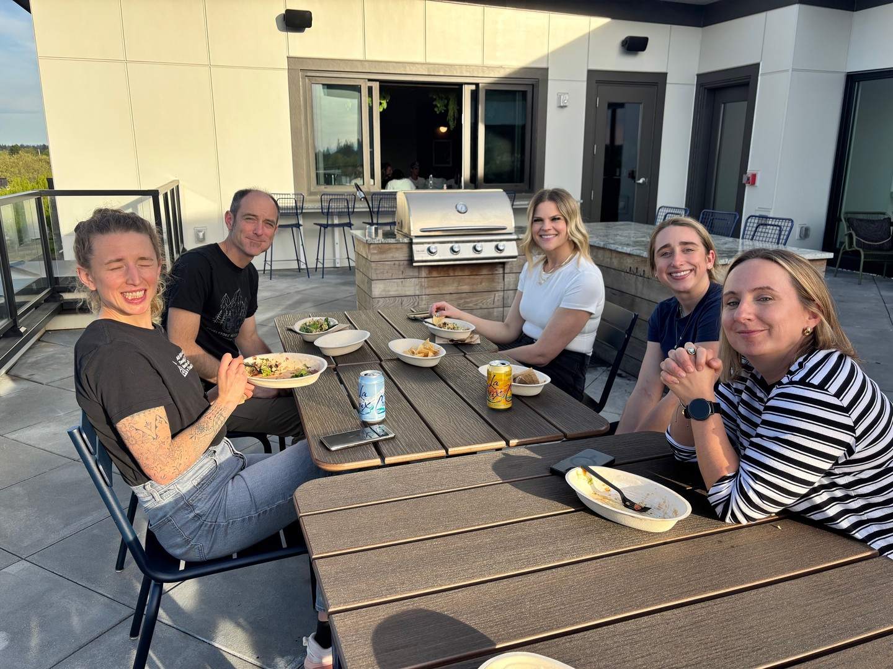
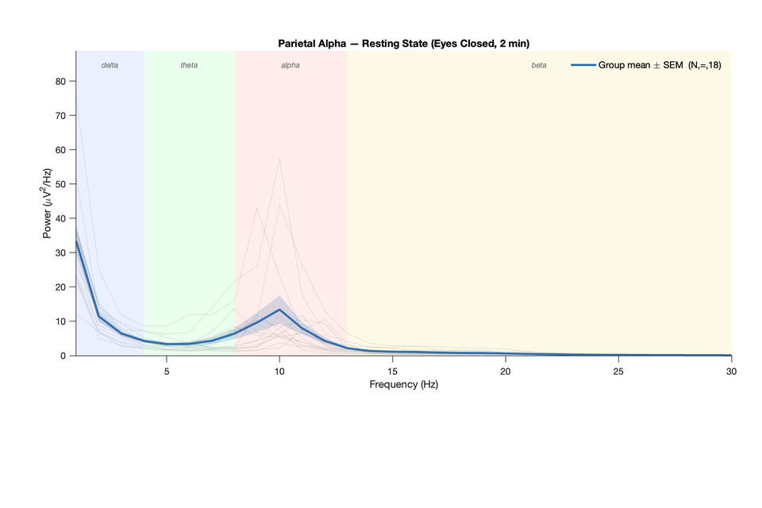
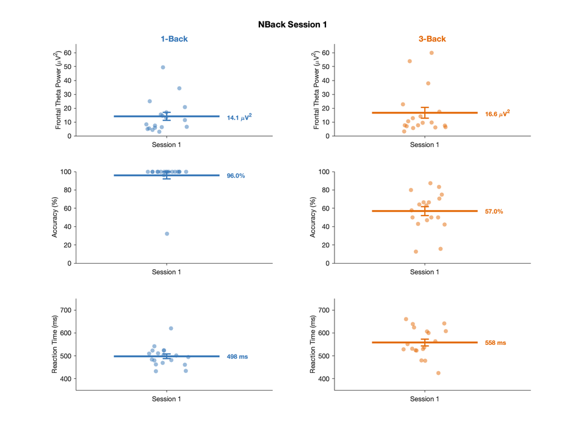
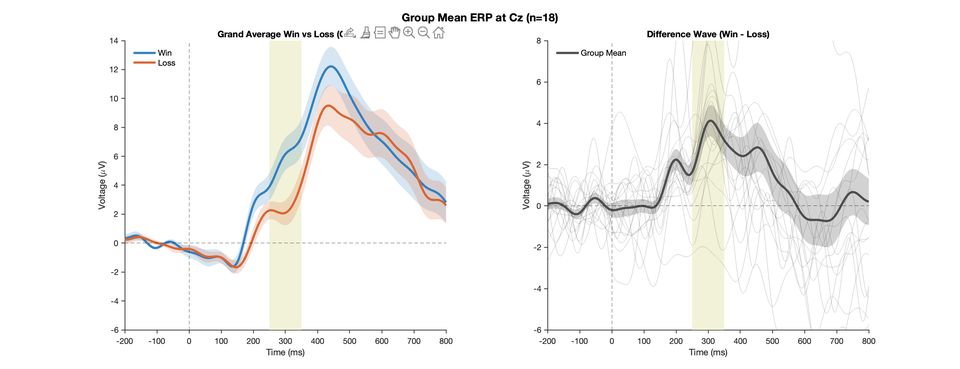
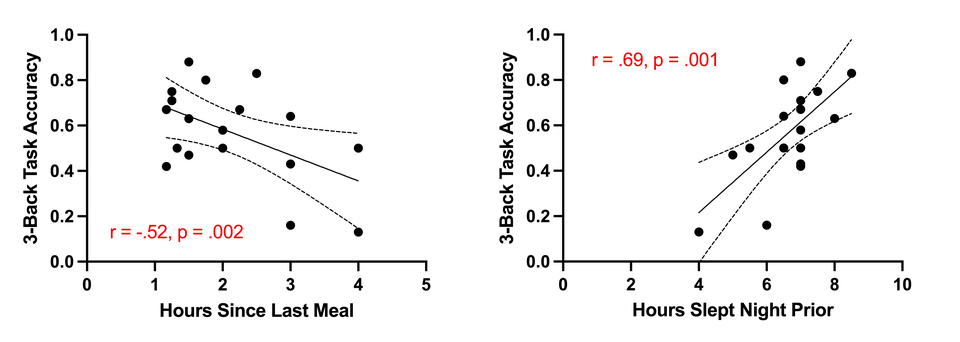
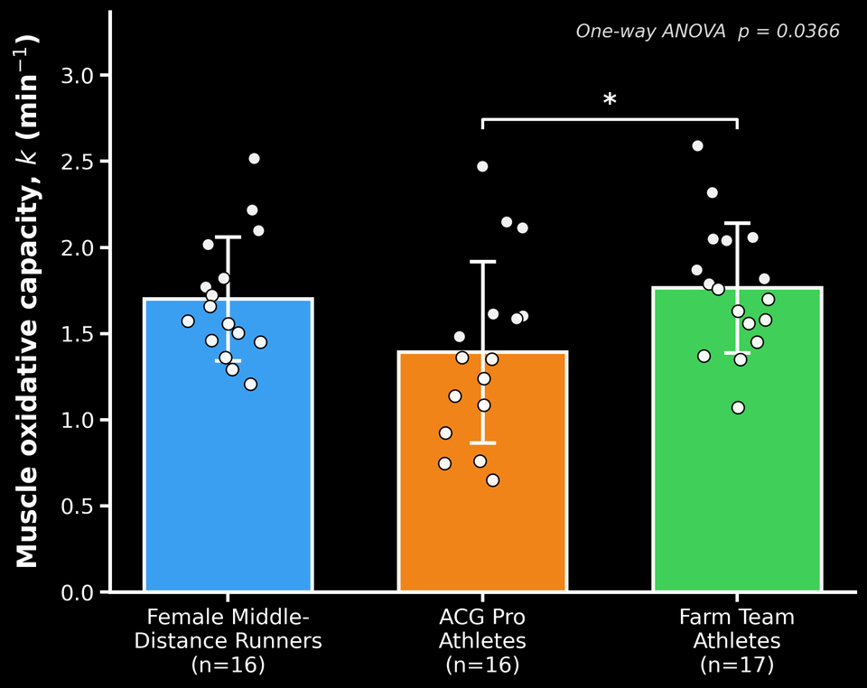
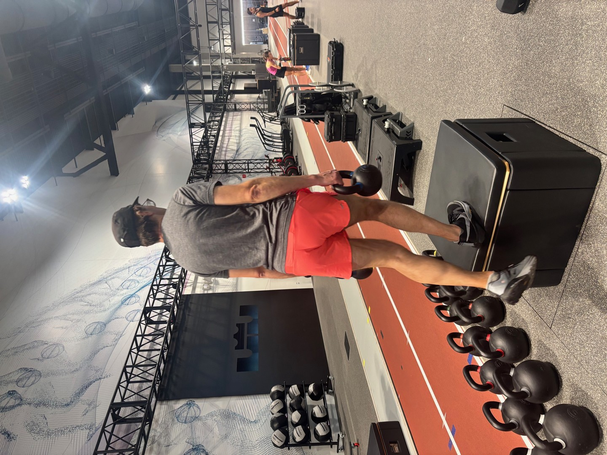

Physiological resilience — the ability to resist deterioration over time — is what separates ultra from everything else. Before we can measure how these athletes change, we need to know who they are right now. 18 experienced ultra endurance trail runners. Baseline testing begins.
Nike is a 50+ year old company whose mission is to bring inspiration and innovation to every athlete in the world — even in its wildest conditions. Founded by an athlete and a coach, Nike has always believed that everything starts with the voice of the athlete.
That belief continues to guide how we create. And for the next 15 weeks, 18 athletes will live it alongside the Innovation team — running, testing, struggling, and sharing their minds and bodies toward a larger purpose.
Nike sells one of the leading marathon shoes on earth, yet it has never been studied beyond 6 minutes of continuous running. This program changes that — from 6 minutes to 4+ hours.
A community of experienced runners from across the ultra and trail landscape — each bringing unique backgrounds, race histories, and biomechanics to the program.

Before the science starts, the team bonds. A welcome dinner, “The Barn” athlete lounge, handwritten welcome baskets delivered to each apartment, and a full product kit to gear up for 15 weeks of running.

Week 1 is the Pre-Testing Phase — establishing baseline properties of ultra endurance trail runners across mechanical, metabolic, and cognitive domains.
What is the muscle elasticity of an ultra endurance trail runner? What is the maximal muscular work capacity?
What is the maximal capacity of muscle to consume oxygen? What is the estimated muscle and bone mass?
Gym familiarization — introducing the strength training protocols that will form the concentric vs eccentric intervention in later weeks.
Leg muscle strength can actually increase after 5 minutes of all-out exercise. Priming is real.
A wide range of lower-limb strength measures and competencies in the gym — additional preparation needed for some athletes.
A wide range of nutrition and hydration knowledge across the cohort.
Using electroencephalography (EEG) — a safe, non-invasive cap that records the brain’s electrical activity in real time — we’re tracking two key components: working memory (holding and using information moment-to-moment) and reward processing (how the brain interprets feedback to shape motivation).
EEG is sensitive to changes in fatigue, stress, and fueling — making it well-suited for tracking how training and recovery influence brain function over time. By tracking these measures weekly alongside cortisol, mental health, and training load, we aim to characterize how physical stress influences cognitive processing across a full training cycle. This integrated perspective has not previously been examined.

Baseline resting state EEG power across the cohort

n-Back task performance — holding and manipulating information under load

Reward Positivity ERP — how the brain responds to performance feedback

Correlations between high-load working memory performance and other metrics
A measurement of a muscle’s ability to utilize oxygen. Athletes wore a cuff (similar to a blood pressure cuff) on the thigh along with a NIRS device measuring local muscle oxygenation.
The cuff rapidly inflates to completely restrict blood flow so that local muscle oxygen consumption can be measured. After very light exercise, a series of occlusions determines how quickly the muscle returns to baseline. A higher muscle oxidative capacity (k) indicates greater oxygen utilization ability.
In highly trained middle-distance runners, muscle oxidative capacity (k) strongly correlates with VO2max, lactate turn point, and critical speed. There is no previously published data on changes in muscle oxidative capacity over a training intervention or over prolonged running.

Baseline muscle oxidative capacity (k) across the Farm Team cohort
This baseline measurement will be repeated at Week 15 to detect training-induced adaptations — a first-of-its-kind longitudinal dataset.
Baseline strength testing to quantify each athlete’s maximal muscular work capacity — the mechanical foundation that the central hypothesis predicts governs physiological resilience during ultra-distance running.
The concentric vs eccentric training intervention (assigned in the coming weeks) will be benchmarked against these baselines to measure whether targeted strength gains translate directly to improved resilience during 4+ hour runs.

Introduction of the Farm Team athletes to the Innovation and ACG Apparel and Footwear teams. Wear testing begins immediately.
Nutrition and hydration partner providing the Farm Team with energy bars, protein powder, energy gels (with and without caffeine), energy drink mix, and collagen for recovery across the 15-week program.